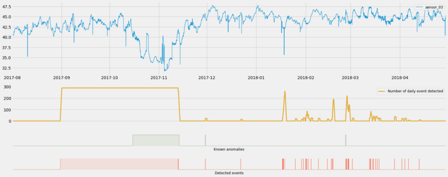
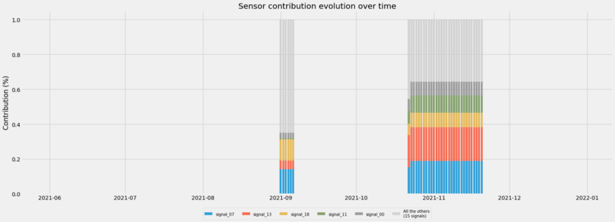
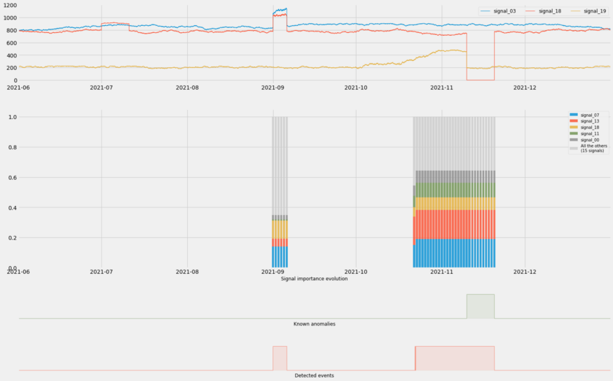
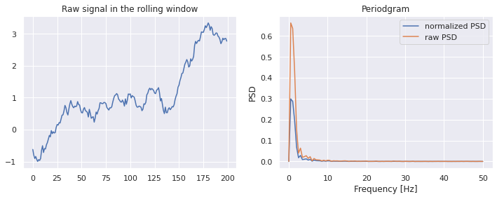
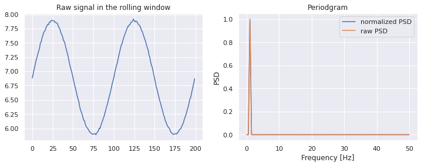
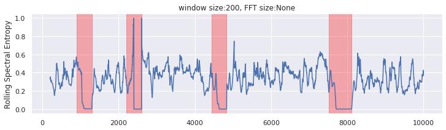
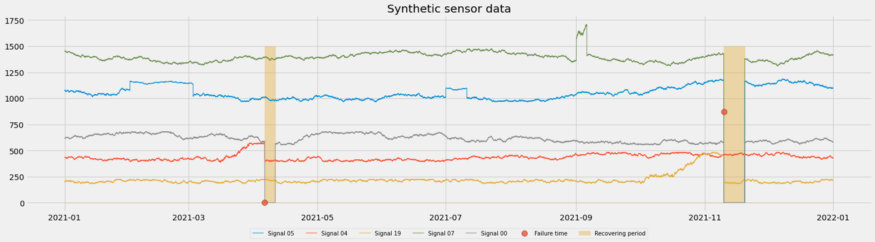
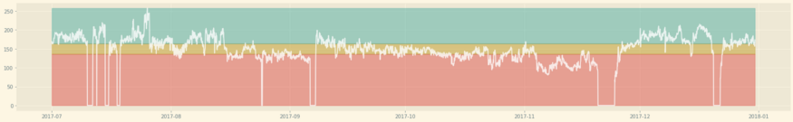
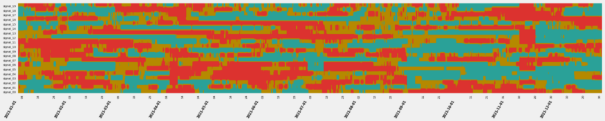
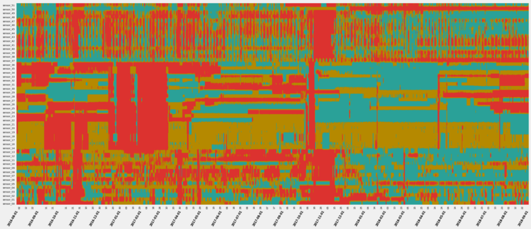

Anomaly Detection
Misc
Also see
- Outliers
- Feature Engineering, Time Series >> Discretization
- Bookmarks
- Time Series >> Cleaning/Processing >> Outliers
- Business Applications >> Fraud/Anomaly Detection
Packages
Resources
- Deep Learning for Anomaly Detection: A Review (2021 Pang et al)
- A Unifying Review of Deep and Shallow Anomaly Detection (2021 Ruff et al)
- Proposes a formal mathematical definition of the notion of outlier
- Reviews “a broad area of the field - including deep neural networks - with a probabilistic perspective on the methods”
- There and Back Again: Outlier Detection Between Statistical Reasoning and Data Mining Algorithms (2019 Zimek and Filzmoser)
- High-Level perspective on outlier detection
- Statistical view on the methods and a probabilistic interpretation of the anomaly scores
A dataset that contains anomalies and has them labeled by a human expert is the ideal case since the problem then turns into a classification task.
- The human can augment a sample with an annotation of which exact features are responsible for the anomaly (e.g., a segmentation mask in the context of image data).
Common Questions
- “I need to know why your model detected an anomaly. I need sound root cause analysis before I adjust my manufacturing process.” (see variable importance tracking)
- “Anomaly detection is not enough: when a model detects an anomaly, it’s already too late. I need prediction to justify investing time and effort into such an approach.” (see event rates)
- “I need prescription: tell me what I should do to prevent a failure from happening.” (see variable importance tracking)
Common Criticisms
- “There are some false positives, I don’t have time to investigate each event!” (see event rates)
- “Your model only detects anomalies when they already happened, it’s useless!“ (see event rates)
- “I have hundreds of sensors: when an anomaly is detected by your model, I still have to investigate my whole operations, I’m not saving any time here!” (see variable importance tracking)
Amazon Lookout for Equipment - managed service from AWS dedicated to anomaly detection
ML Algorithms (Descriptions from BRDAD paper)
Bagged Regularized k-distances for Anomaly Detection (BRDAD) is a distance algorithm that converts the unsupervised anomaly detection problem into a convex optimization problem. Is able to address the sensitivity challenge of the hyperparameter choice in distance-based algorithms. It has two hyperparameters, including the bagging rounds B and the subsampling size s. For the sake of convenience, s = [n/B] is fixed so the bagging rounds B is the only one hyper-parameter and is set to be B = 5 as default.
Elliptic Envelope is suitable for normally-distributed data with low dimensionality. As its name implies, it uses the multivariate normal distribution to create a distance measure to separate outliers from inliers. {{sklearn.covariance.EllipticEnvelope}}
Distance-To-Measure (DTM) is a distance-based algorithm which employs a generalization of the k nearest neighbors named “distance-to-measure”. As suggested by the authors, the number of neighbors k is fixed to be k = 0.03 × sample size.
k-Nearest Neighbors (k-NN) is a distance-based algorithm that uses the distance of a point from its k-th nearest neighbor to distinguish anomalies.
Local Outlier Factor (LOF) is a distance-based algorithm that measures the local deviation of the density of a given data point with respect to its neighbors. {{sklearn.neighbors.LocalOutlierFactor}}
Partial Identification Forest (PIDForest) is a forest-based algorithm that computes the anomaly score of a point by determining the minimum density of data points across all subcubes partitioned by decision trees. Authors’ implementation uses number of trees T = 50, the number of buckets B = 5, and the depth of trees p = 10 .
Isolation Forest (iForest) is a forest-based algorithm that works by randomly partitioning features of the data into smaller subsets and distinguishing between normal and anomalous points based on the number of “splits” required to isolate them, with anomalies requiring fewer splits. {{sklearn.ensemble.IsolationForest}}
One-class SVM (OCSVM) is a kernel-based algorithm which tries to separate data from the origin in the transformed high-dimensional predictor space. An O(n) approximate solution to the One-Class SVM. Note that the O(n²) One-Class SVM works well on our small example dataset. {{sklearn.linear_model.SGDOneClassSVM}}
Any abnormal event visible in your time series will either be a:
- Precursor Event
- Detectable Anomaly (forewarning about a future event)
- A Failure
- Maintenance Activity
- Healing Period (while your industrial process recovers after an issue)
Types
- Shocks - abrupt changes, spikes
- Level Shifts - can happen when a given time series shifts between range of values based on underlying conditions or operating modes.
- Level – The average value for a specific time period
- If you want to consider all operating modes when detecting anomalies, you need to take care to include all of them in your training data
- Trending: a set of signals can change over time (not necessarily in the same direction).
- When you want to assess the condition of a process or of a piece of equipment, these trending anomalies will be great precursors events to search. They will help you build forewarning signals before actual failures may happen.
STL
Residuals
The residual component should be white noise, so any extreme spikes or dips might be an indication of an anomaly
Extract the residuals component and perform outlier statistical tests on the points
- Calculate z-scores points and points that are 2 or 3 sds from the mean might indicate outliers, IQR, Hampel’s Filter, Grubb’s test, etc.
Trend
- Any unexplained abrupt shifts in the trend component might indicate an outlier
Visualize counts of outliers per year, per season
Use average event rates to filter out false positives and predict an upcoming event
- Take action if the event rate (i.e. rate of predicted events) starts to grow too large (allowing you to move from detecting to predicting)
- e.g. You can decide to only notify an operator after the daily event rate reaches at least 200 per day. This would allow you to only react to 3 events out of the 41 detected (aka predicted) during this period
- Use historical event data to calculate an event rate threshold
- By only reacting after a threshold predicted event rate has been reached, you filter out false positives (when scarce events are detected)
- Take action if the event rate (i.e. rate of predicted events) starts to grow too large (allowing you to move from detecting to predicting)
Track variable importance over time to narrow the field of potential causes of an event
- 2 stacked column charts represent two anomalous events.
- Each color is a predictor variable (e.g. sensor) that was important to the prediction of the event.
- Only need to focus on a few (e.g. top five predictor variables)
- Use to examine false positives and actual events
- For the false positive (left)
- The percentage of importance attributed the top 5 is much less than that for an actual event
- Red is less important and Yellow is more important than when there’s an actual event
- For the false positive (left)
Rolling Spectral Entropy

Spectral Entropy is the normalized (power) spectral density )(PSD)
Misc
Guidelines
- A series which has strong trend and seasonality (and so is easy to forecast) will have entropy close to 0.
- In the case of noisy time series, this indicates an anomaly.
- A series that is very noisy (and so is difficult to forecast) will have entropy close to 1.
- A series which has strong trend and seasonality (and so is easy to forecast) will have entropy close to 0.
Example
def spectral_entropy(x, freq, nfft=None): _, psd = periodogram(x, freq, nfft = nfft) # calculate shannon entropy of normalized psd psd_norm = psd / np.sum(psd) entropy = np.nansum(psd_norm * np.log2(psd_norm)) return -(entropy / np.log2(psd_norm.size)) window = 200 nfft = None df = pd.DataFrame(data=x, columns=['x']) df['x_roll_se'] = df['x'].rolling(window).apply(lambda x: spectral_entropy(x,freq=100,nfft=nfft))- If the FFT size is not specified, we will use the window size
{kind=link}
{kind=link}
{kind=link}
{kind=link}
{kind=link}
{kind=link}
{kind=link}
Charts
- The goal to breakdown an anomaly (e.g. manufacturing process outage) into constituent parts (sensor readings).
- By analyzing the sensor readings, you can potentially find the area causing the anomaly
- There also might be leading indicators that are predictive of an anomaly.
- Often you’re looking at many time series (e.g. a manufacturing process) when performing EDA for anomaly detection, and conventional time series charts are insufficient
- Horizon Chart
.png)
- Hue (e.g. blue or red) represents values above or below a certain value
- Darkness/lightness of the color represents the extremeness of the value
- i.e. the darker the color the larger the magnitude of the y-axis value
- Vertical layers in the normal chart become horizontal layers of the horizon chart
- layer feature may provide more detail than the strip chart
- Strip Chart
- Similar to horizon in that y-axis values get binned and represented by colors
 - Example
- Colors
- Blue - low, Gold - medium, Red - high
- Columns of red indicate shocks (e.g. around 2022-11-15)
- Colors
- Example
- Colors
- Blue - low, Gold - medium, Red - high
- Major color changes in color indicate trend/level shifts
- e.g. the change from a lot of red to a lot of blue after December 2017
- Colors
- Similar to horizon in that y-axis values get binned and represented by colors
{kind=link}
{kind=link}
{kind=link}
{kind=link}
Isolation Forests
- Also see Algorithms, ML >> Trees >> Isolation Forests
- A tree-based approach where outliers are more quickly isolated by random splits than inliers
- Notes from paper: https://cs.nju.edu.cn/zhouzh/zhouzh.files/publication/icdm08b.pdf
- The tree algorithm chooses a predictor at random for the root node. Then randomly chooses either the minimum or the maximum of that variable as the splitting value. The algorithm recursively subsamples like normal trees (choosing variables and split points in the same manner) until each terminal node has one data point or replicates of the same data point or preset maximum tree height is reached. Across the trees of a forest, anomalies with have a shorter average path length from root to terminal node.
- The algorithm is basically looking for observations with combinations of variables that have extreme values. The process of continually splitting subsamples of data will run out data points and be reduced to a single observation more quickly for an anomalous observation than a common observation.
- Makes sense. Picturing a tree structure, there shouldn’t be too many observations with more that a few minimums/maximums of variable values. The algorithm weeds out these observations as it moves down the tree structure.
- Any or all of these wouldn’t necessarily be global minimum/maximums since we’re dealing with subsamples of variable values as we move down the tree.
- Paper has some nice text boxes with pseudocode that goes through the steps of the algorithm.
- Anomaly scores range from 0 to 1. Observations with a shorter average path length will have a larger score.
Anomaly score
\[ \begin{aligned} &s(x_i, n) = 2^{-\frac{\mathbb{E}(h(x_i))}{c(n)}}\\ &\begin{aligned} \text{where}\quad c(n) &= 2H(n-1) - \frac{2(n-1)}{n} \\ H(i) &= \ln(i) + \gamma \end{aligned} \end{aligned} \]
- \(\mathbb{E}(h(x_i))\) is the average path length across the isolation forest for that observation
- \(H(i)\) is the harmonic number and \(\gamma\) is Euler’s constant
Guidelines
- The closer an observation’s score is to 1 the more likely that it is an anomaly
- The closer to zero, the more likely the observation isn’t an anomaly.
- Observations with scores around 0.5 means that the algorithm can’t find a distinction.
Autoencoders
- An outlier is something that the autoencoder has not seen often during training, so it might have trouble finding a good encoding for them.
- An autoencoder tries to learn good encodings for a given dataset. Since most data points in the dataset are not outliers, the autoencoder will be influenced most by the normal data points and should perform well on them.
- Misc
- Also see Feature Reduction >> Autoencoders